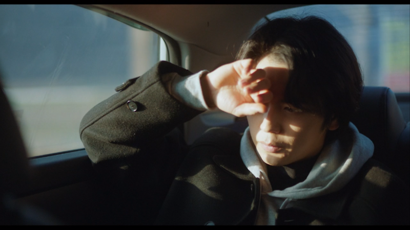

매거진 삼삼오오 · 연재
나를 키워준 당신에게 - 오정민 감독

장르 불문! 대구독립영화
대구는 남몰래 내다버리고 싶은 정체성입니다. 우리는 고향이 대구라 때때로 부끄럽습니다. 사사건건 그 이유를 적고 싶지는 않습니다. 일말의 애향심이 그러지 못하게 합니다. 이 일말의 애향심이 우리를 괴롭게 합니다. 빙그레 웃으며 “나는 스무 살 때부터는 서울에 살아서 지방은 잘 몰라”같은 말을 하기는/듣기는 참 쉽습니다. 억양을 지우고 서울의 구를 줄줄 외워보면 됩니다. 그렇지만 탈주는 거듭할수록 허망해집니다. 그 속성이 나를 비워가는 것이기 때문입니다.
이러한 맥락에서 오정민의 〈장손〉은 대구 사람에게 흥미로운 영화입니다. 감독 자신이 대구에서 20년을 살았고 〈장손〉의 내용 역시 대구로 되돌아온 시간과 그 여파에 대한 것이기 때문입니다. 영화 〈장손〉에서 성진은 대구에서 일어나는 일들을 외면하려고 합니다. 택시를 타고 대구로 오는 성진은 그것을 미루고 싶은 건지 구토 하고, 택시를 타고 서울로 돌아갈 때의 성진에게는 따가운 햇볕이 비치고 그는 눈을 가립니다. 결과적으로 성진은 대구에서의 일을 외면하겠지만, 〈장손〉과 감독 오정민은 성진을 빌려 대구라는 공간을—그것의 외면하고 싶은 속성까지—대면합니다.
나를 키워준 당신에게
오정민 감독

“왜 꼭 대구여야 하나요?”
<장손>의 대본을 본 배우와 스태프들의 단골 질문이었다. 시간과 비용을 생각하면 수도권에서 전통마을을 찾는 게 합리적이지 않냐고 물었다. 나는 영화에서 공간이 얼마나 중요한지 미학적인 이유를 들어 설명했지만 사실 변명이었다. 나는 고향, ‘대구’에서 나의 첫 영화를 시작하고 싶었다. 이유를 불문하고 <장손>은 꼭 ‘대구’여야만 했고 ‘대구’여야만 성립할 수 있는 영화였다. 그래서 피디님과 제작팀이 오랫동안 대구 외곽의 전통 마을을 뒤졌지만, 촬영에 적합한 공간을 찾기 어려웠다. 대부분 숙박이나 체험 학습을 진행하는 관광지로 바뀌어 생활감을 잃어버렸고, 가옥의 내부는 촬영하기에 다소 협소했다. 그래서 결국 대구 이외에도 합천, 고령, 거창 등지에서 공간을 나눠 촬영했지만 <장손>의 공간 설정이 ‘대구’라는 사실은 변함이 없었다. 하지만 <장손>을 통해 현재 대구의 모습을 반영하겠다는 생각은 전혀 없었다. <장손>은 ‘대구’여야 하지만 실제 현재의 ‘대구’와는 아무런 상관이 없었다. <장손>의 공간은 태어나 자라며 느꼈던 내 고향의 심상이며 지극히 개인적인 표상이었다.
나는 대구광역시 남구 대명동에서 태어나 20년을 살았다. 집안의 기대를 받는 장손이자 사랑을 독차지하는 막내였다. 그리고 대학 진학을 위해 상경했다. 아이러니하게도 내가 대구에서 살 때보다 대구를 떠나 서울에 살면서 오히려 대구라는 공간을 객관적으로 바라보고 사유할 수 있었다. 대학 교육을 받으면서 나의 삶이 송두리째 흔들렸다. 내가 믿어왔던 것들이 부서졌고 사회를 보는 시선도 많이 바뀌었다. 그래서 사투리도 바꾸고 한동안 내가 대구 사람이라는 사실을 의식적으로 숨기기도 했다. 하지만 그럼에도 내가 ‘집’이라고 부르는 공간은 서울 자취방이 아니라 대구 본가였다. 나는 그렇게 한참을 서울 사람도 대구 사람도 아닌 이방인처럼 살았다. 한국영화아카데미 졸업 후 <장손>을 준비할 무렵 대구 오오극장에서 내가 만든 단편영화 상영회가 있었다. 가족과 지인들이 대부분인 가족 잔치였지만 일반 관객들도 꽤 있었다. 관객과의 대화가 마무리될 때쯤 객석 앞쪽에 앉은 관객이 난감한 질문을 던졌다.
“감독님 영화에는 왜 아버지가 등장하지 않죠?”
나는 당황했지만, 뒷줄에 앉은 아버지를 의식하며 침착하게 대답했다.
“아마 다음 영화에는 아버지가 등장할 것 같습니다.”
사실 이전에 내가 만든 단편영화에서 주인공이 대부분 여성이었다. 영화도 인물 관계를 섬세하게 그리는 스타일이고 심지어 이름도 중성적인 탓에 나를 여성으로 오해하는 일도 잦았다. 친구들도 왜 주인공이 항상 여자냐고 물었고 나는 그때마다 그래야만 내가 자유로워진다고 둘러댔다. 지금 돌이켜보면 나는 아버지를 대면할 준비가 되지 않아 가면을 쓰고 회피해왔다. 관객의 질문에 대답하는 순간, 나는 <장손>이 ‘아버지’에 대한 영화임을 깨달았다. ‘아버지’와 대면하기 위해서 나는 두렵지만 나의 고향, 대구로 다시 들어가야만 했다. 그리고 그 속에서 나를 키워낸 ‘아버지’를 다시 마주했다.
첫 번째 ‘아버지’는 나의 낳아주신 생물학적 아버지다. 남들이 좋은 대학에 가기 위해서 열심히 공부할 때 나는 아버지와 떨어져 살기 위해 공부했다. 아버지와 난 피를 공유했지만 기질적으로 맞지 않았다. 아버지는 내가 안정된 직업을 가지길 원하셨고, 그럴수록 나는 더 자유롭게 살고 싶었다. 밥을 빌어먹고 얹혀살 때까지는 말을 들을 수밖에 없지만 성인이 되는 순간 집을 떠나겠다고 다짐했다. 적의 적은 나의 친구란 말처럼 아버지와 반목했지만 할아버지와는 항상 가까이 지냈다. 할아버지의 사랑은 아버지를 지나쳐 나에게 투사됐다. 아침에 한약을 빼먹고 먹지 않는 날이면 어김없이 할아버지가 한약을 들고 학교로 찾아올 정도였다. 할아버지가 워낙 동안인 탓에 초등학교 선생님은 할아버지를 아버지로 착각했다. 나는 그때마다 할아버지가 나의 아버지였다면 어땠을까 하는 상상을 했다. 하지만 시간이 흐른 지금 할아버지는 세상을 떠났고 아버지는 점점 할아버지를 닮아가고 있다. 그렇다면 나도 아버지를 닮아가는 것일까. 집안의 장손으로서 세상에 던져진 나는 내 의사와는 상관없이 사랑과 기대를 한 몸에 받았다. 감사한 마음과 떨치고 싶은 부담감이 동시에 존재했다. 나는 서울로 대학을 진학하며 사랑하는 가족에게서 드디어 벗어날 수 있었다. 자연인 오정민으로서는 해방감을, 집안의 장손으로서는 죄책감을 동시에 느꼈다. 나는 그렇게 물리적으로 독립했지만 정신적으로 독립했는지는 아직도 확신할 수 없다.
갓 서울에 올라온 나는 애향심이 강했지만 주위에서 대구를 바라보는 시선은 썩 유쾌하지 않았다. 보수 꼴통이라든지 융통성 없이 꽉 막힌 사람처럼 바라봤다. 이런 편견이 어디서부터 기인하는지 알고 싶었다. 사실 과거 대구는 반골의 도시이자 좌파 항쟁의 성지였다. 10월 항쟁과 2.28학생 운동 등 수많은 사회 운동이 벌어졌고 전국에서 사회주의 활동이 가장 왕성한 탓에 ‘조선의 모스크바’라고 불리기도 했다. 하지만 5.16쿠데타로 등장한 박정희는 대구를 보수의 성지로 바꿔놓았다. 박정희는 세상을 떠났지만, 그 망령이 아직도 남아 대구 사람들의 멘탈리티에 지대한 영향을 미치고 있다. 대구에서 영화를 찍는다면 박정희는 피할 수 없이 대면해야 할 대타자였다. 나는 나를 키워준 두 번째 ‘아버지’인 박정희를 영화에 꼭 담고 싶었고 담길 수밖에 없다고 생각했다. 대만의 신랑차오 감독들에게 ‘장제스’라는 존재는 나에겐 ‘박정희’인 셈이다. 그것이 어떻게 영화에 담겼는지는 내가 말로 하기보다는 관객들이 각자 느껴주시길 바란다.
이 글을 청탁한 금동현 평론가는 <장손>에서의 대구를 ‘어딘가 외면하고 싶은 장소’처럼 느꼈다고 했는데, 나의 솔직한 태도이자 자전적인 지점에서 기인한다는 사실을 인정한다. <장손>을 만들 때 많이 본 영화 중 하나가 <대부>다. 마피아와 가부장제의 규율은 아주 유사했고 아버지를 부정하지만 결국 닮아간다는 점에서 성진과 마이클은 쌍둥이 형제 같았다. 더 길게 이야기하고 싶지만 내 영화를 지키기 위해 이쯤에서 마무리하는 게 좋겠다. 짧은 글이지만 나의 내밀한 삶이 드러나는 탓에 몇 번이고 쓰고 지우고를 반복했다. 부디 내 진심과 변명이 잘 전달되기를 바라며 여기서 못다 한 이야기는 다른 기회에 다른 방식으로 전할 수 있기를 바란다.